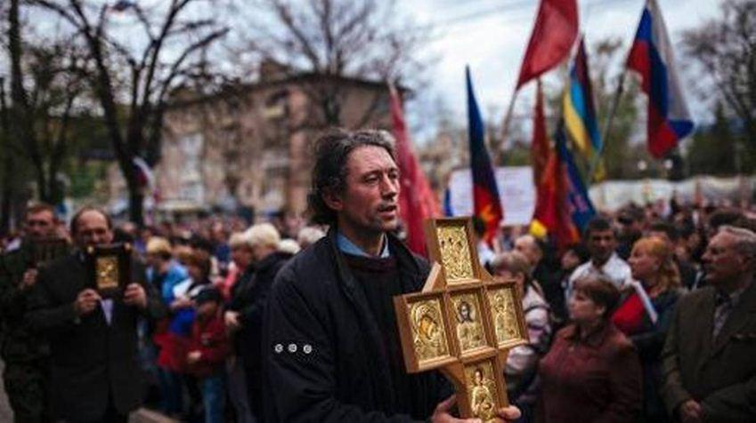

Causes et antécédents du « Printemps russe » dans le Donbass durant les années 2014-2015 : nécessité de leur étude et du fondement scientifique
par V. I. OVINNIKOV
Les problèmes dans le Monde russe se sont brusquement envenimés au cours des dernières années. Ils se particulièrement révélés lors de la crise politique et du conflit armé en Ukraine durant les années 2014-2015, au moment de la prise de conscience nationale de la population russe du Donbass, déclarant leurs droits à la langue, à la foi et aux structures étatiques, en union avec le Monde russe.
Durant ces deux années, les tendances clés de la vie en République Populaire de Donetsk autoproclamée, permettent de commencer à évaluer des changements historiques : politiques, économiques, sociales et militaires.
Tous les événements, arrivés de faits disparates, s’alignent dans plusieurs vecteurs et, en étant considérés dans la dynamique, représentent un processus de formation d’une nouvelle société.
Pour comprendre ces processus complexes, comprendre ce qui nous est arrivé pour découvrir des mécanismes cachés définissant la direction des changements, il est nécessaire de faire une analyse approfondie et complète de la situation. Il faut ainsi étudier les faits et les événements en Ukraine et en république autoproclamée non à partir des années 2014-2015, mais sur la base des rétrospectives historiques communes. Tout d’abord il serait utile et correct de trouver les causes et les antécédents, qui ont provoqué un mouvement populaire de masse, des actes sacrificiels des habitants du Donbass et d'une multitude de gens de différentes nationalités, qui sont venus aider les Donetskiens au nom de l'unité avec le Monde russe.
Dans le même temps il faut comprendre et arriver à un consensus à l'égard de l'appareil conceptuel, de sorte que des auteurs de livres, de magazines et de journaux donnent des caractéristiques et des définitions différentes aux mêmes événements et leurs participants, ce qui conduit à une confusion terminologique, créé la confusion dans leurs identifications et, donc, produit une incompréhension objective de ce qui se passe.
Ici, des historiens, étudiant ces événements, devront faire face à de nombreuses difficultés. Premièrement, nous sommes au cœur des événements actuels, ce qui entrave sérieusement une analyse impartiale, indépendante et objective.
Deuxièmement, des nombreux processus ne sont pas encore achevés, et on ne sait pas comment ils vont se développer et quelle sera leur direction finale dans le développement.
Aujourd'hui, bien sûr, il est important d’avoir non seulement un travail des historiens mais aussi une participation des experts, des politologues, des philosophes, des sociologues et des spécialistes d'autres domaines, étudiant des événements qui se déroulent devant nous en et au-delà de la RPD. Sur la base de la littérature, des documents, des recherches scientifiques existants, on propose une certaine vision de ce qui a incité des habitants du Donbass à venir au référendum, le 11 mai 2014, pour soutenir la souveraineté de la RPD et la défendre à main armée.
Première cause. Une étude des événements, liés à l'histoire ancienne et contemporaine de l'Ukraine, la CEI, l'URSS, permet de conclure que l’État « indépendant » de l'Ukraine n’est qu’un produit de la mystification historique mondiale et de la provocation politique. Selon certains chercheurs, les auteurs du projet « Ukraine » ont temporairement atteint leur objectif : ils ont transformé des Russes dans une nation séparée et ont opposé une partie du peuple à l'autre.
Au cours de la mise en œuvre du projet politique « Ukraine », la récente façon de faire la guerre d'information psychologique, qui n’a pas encore été retrouvée avant dans l'histoire du monde, a été appliquée. Il faut reconnaître qu’il a apporté les résultats escomptés à ses auteurs.
Comme principal instrument de la guerre d'information psychologique, il a été sélectionné un instrument absolument original : celui de la « création » d'une nation par une autre, sans que la nation d'origine ne le remarque. Au cours des cent dernières années, des Russes en Ukraine ont été transformés en une sorte de « nouvelle nation » – des « Ukrainiens » ; aujourd'hui c'est tout à fait invisible pour la plupart des « anciens » Russes, qui sont devenus des « Ukrainiens ». Néanmoins tous n’acceptèrent pas cette transformation et « Le Printemps russe » a commencé dans le Donbass.
Deuxième cause. En vingt ans d'existence de l’Ukraine, des différences marquées selon des critères politiques, idéologiques, philosophiques, axiologiques, régionaux, linguistiques, culturels, ethniques, religieux, etc., transformant de plus en plus en phase de confrontation, se sont affirmés parmi ses citoyens. Des profondes catégories philosophiques multiséculaires, que les civilisations russe et occidentale gardent et mettent en œuvre, sont au cœur d'un conflit violent, qui avait pourtant initialement pris une forme de confrontation pacifique.
Il y a de nombreux arguments et des raisons particulières pour que la population du Donbass, surtout dernièrement, s’identifie au Monde russe. Cela est confirmé par des données statistiques, de recensements, sociologiques et d’autres sondages de la population, et la vie elle-même.
Aujourd'hui, nous sommes beaucoup plus proches des origines nationales, car les deux dernières décennies nous promouvions l'idée russe, battions pour l'honneur et la dignité de l’homme russe, accumulions une expérience, nous préparions à de nouveaux défis graves et tragiques. Il s'est avéré que les gens, vivant côte à côte dans la famille fraternelle des peuples de l'URSS, tout à coup, se sont acharnés, irrités et venus des terres russes à tuer des civils du sud-est de l'Ukraine simplement parce qu'ils n’avaient pas, la première fois, eu le courage de demander la fédéralisation de l'Ukraine, d'inciter au rapprochement avec la Russie et de donner le statut de langue officielle à la langue russe.
En raison de conditions historiques, les habitants de la Galice et d'autres régions adjacentes sont principalement des porteurs de valeurs inhérentes à la civilisation occidentale, et les habitants du Donbass ont d’autres orientations idéologiques. Ils partagent et donnent la préférence aux catégories fondamentales de la civilisation russe, par exemple, l'idéal du sobornost. Le sobornost est la dissolution d'un homme russe dans son église, son État et son peuple, c'est l'amour aux valeurs communes. Le sobornost est directement opposé à la notion d'individualisme, sur quoi se fonde la civilisation occidentale. La Russie a réussi, comme en témoigne son histoire, à créer des conditions dans lesquelles presque chaque homme russe peut être un architecte de la grande puissance, non pas par la peur mais par sa conscience.
Aujourd'hui, le sort de l'humanité se joue dans cette confrontation entre civilisations russe et occidentale. Si la civilisation occidentale gagne - le monde sera transformé en un camp de concentration gigantesque, où 80 % de la population mondiale sera derrière des barbelés pour produire des ressources pour les autres 20 %. Une course de consommation, privée de toutes restrictions, dans les pays occidentaux conduira à l'épuisement des ressources mondiales et la destruction de l'humanité.
Ces contradictions, qui sont devenues une ligne de partage entre les civilisations russe et occidentale, tout d'abord ont débouché sur une confrontation sur des places en Ukraine, et puis ont transformé en une guerre fratricide. Pour l’Occident et l’Ukraine, sur l’Euromaïdan, de la fin de 2014 – au début 2015, se tranchait une question fatidique sur un mode de vie de la société ukrainienne à venir, découlant des concepts qui constituent une base idéologique de deux civilisations : russe et occidentale.
Troisième cause.
Une place spéciale dans la guerre idéologique contre les Russes, déployée par l’autorité ukrainienne après 1991, est attribuée à la terreur idéologique et physique contre des fidèles de l'Église orthodoxe du Patriarcat de Moscou.
En ayant construit l'État soi-disant indépendant sur le rejet de tout russe, en ayant réécrit l'histoire de son propre peuple, en ayant exalté une langue et des symboles créés de rien, ils ne pouvaient pas ne pas toucher un des phénomènes les plus importants scellant le peuple russe : sa foi.
Quatrième cause. L’Ukrainisation forcée de la population russe de l'Ukraine et du Donbass a été effectuée dans les domaines suivants :
— l’élimination de la langue russe de toute écriture publique et de l'éducation ;
— la « passeportisation » forcée des Russes en « Ukrainiens » ;
— la réécriture de l'histoire, la création d'une histoire complètement fausse, basée sur un mensonge total avec l'esprit russophobe ;
— l’utilisation des médias pour créer une image de l'ennemi : l’État russe ;
— l’attisement de la haine parmi des habitants de l'Ukraine ;
— la recherche constante et la création artificielle de situations conflictuelles avec la Russie, et l'implication des pays européens et des États-Unis dans le processus de « l’ukrainisation ».
Cinquième cause. De profondes transformations se continuaient dans le domaine économique en Ukraine. La destruction des propriétés communale et publique ont constitué l’étape finale. La redistribution a été effectuée par le mécanisme de vouchers, qui était un paravent pour rançonner une majeure partie des citoyens, surtout dans le Donbass. En 2011, environ 90 % des biens communaux et publics ont été privatisés. La privatisation des biens publics a été réalisée avec un bénéfice pour les acheteurs et au détriment des citoyens et de l'État.
L'économie de l'Ukraine s’est brisée. Elle n'a non seulement pas été investie par l'argent pour l'innovation, mais les fonds d'amortissement ont également été dilapidés. Les fonds de base de l'industrie et des services publics ont été consommés de 75 % à 90 % durant les années de « l'indépendance ». L'agriculture a été dans un état pire que l'industrie. La plupart des économies utilisaient des équipements vieux de plus 20 à 30 ans. Des fonds de base se détruisaient partout, ce fut particulièrement contraignant pour les entreprises industrielles du Donbass. Les bâtiments des usines et les locaux des fermes d'élevage furent partout détruits, des champs furent abandonnés et envahis par des plantes adventices. Le domaine social enfin fut également détruit : les établissements de soins, scolaires et préscolaires.
Sixième cause. Les assises de la société furent corrodées par l’économie souterraine et la corruption. Le pouvoir a été affecté par le népotisme et le favoritisme. La démoralisation absorbait de plus en plus nouveaux secteurs de la société. Elle a même commencé à pénétrer dans les cellules, qui traditionnellement étaient un environnement pour générer des impulsions de hautes normes de moralité publique : l'éducation, la santé, la culture. Ici, des maltôtes, une vente de notes terminales, de certificats et de médailles scolaires sont devenus habituels.
La corruption a prospéré dans les écoles supérieures — des pots de vin pendant des campagnes d’admission, des épreuves et des examens au cours des études et soutenances des diplômes. Même la communauté académique n'a pas pu résister aux carottes des thésards scientifiques et des candidats pour des primes.
Septième cause. En avril 2010, le IIIe Forum antifasciste ukrainien s’est déroulé au centre de la coopération d’affaires et culturelle « La maison ukrainienne ». Des participants ont alors discuté de la situation alarmante qui s’était formée au cours des 5 dernières années de la présidence des forces politiques « oranges-cordiaux » qui, d'une part, avaient contribué à l'effondrement de l'économie nationale et l'asservissement de son capital occidental, et, d'autre part — avaient lancé une fascisation totale de l’État. Le forum s'est déroulé sous le slogan « Arrêtons le fascisme en Ukraine ». Toutefois, jusqu’à aujourd’hui rien n’est arrêté...
Les principales caractéristiques de l'idéologie fasciste sont les droits particuliers d'un groupe social ou ethnique. Il existe de nombreuses variantes : la justification de la supériorité et de l'exclusivité d'une nation dominante proclamée de ce fait ; l’adoption de la violence et de la terreur pour réprimer des opposants politiques de toutes formes de dissidence ; la militarisation de la société, la création de groupes paramilitaires et de la justification de la guerre comme un moyen de résoudre des problèmes. Pendant l’Euromaïdan, le nombre d’idéologues du fascisme s’est accru, y compris au pouvoir. Dans ce contexte, une idéologie fasciste en Ukraine peut être considérée comme mise en œuvre au regard, par exemple, de la seule déclaration d’Yatsenuk lorsqu’il indique que les habitants de Donetsk et de Lugansk sont des sous-hommes et promet de « nettoyer la terre du mal ».
Dans ce travail, bien sûr, toutes les causes et les antécédents, présentant un intérêt scientifique, cognitif et didactique pour des chercheurs, ne sont pas cités. Les sujets socio-culturels et économiques ont été juste partiellement examinés. Les historiens disposent néanmoins de toutes les conditions pour révéler les problèmes épineux comme les différences régionales, le domaine de symboles et valeurs, les relations entre des différents groupes dans la société ukrainienne, la transformation de la politique économique, budgétaire et de la structure sociale, ainsi beaucoup d'autres.
Dans le même temps une attention particulière pourrait être accordée à l'étude de l’histoire nationale intégrale falsifiée par des « historiens » et sociologues ukrainiens pendant une période historique considérable. Cela, à son tour, exigera de rassembler des efforts pour rédiger un programme à grande échelle pour contribuer à surmonter l'obstacle d’un fossé créé artificiellement entre les deux parties du peuple russe et restaurer la justice scientifique par des historiens des républiques autoproclamées.


Partager cette page